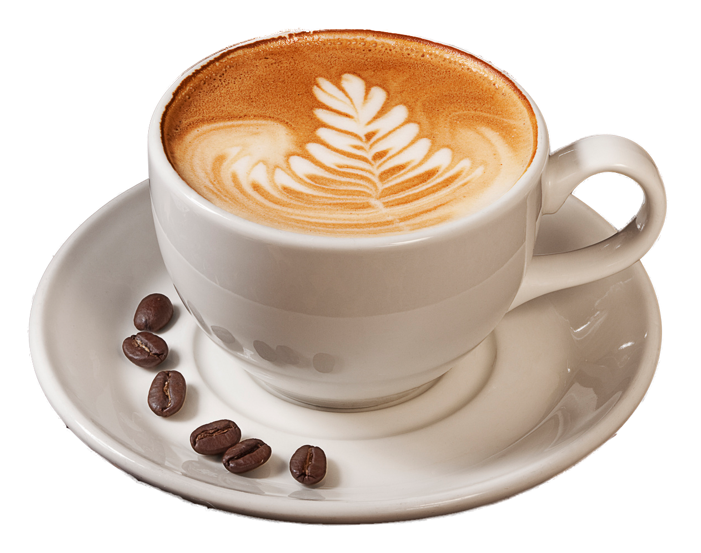
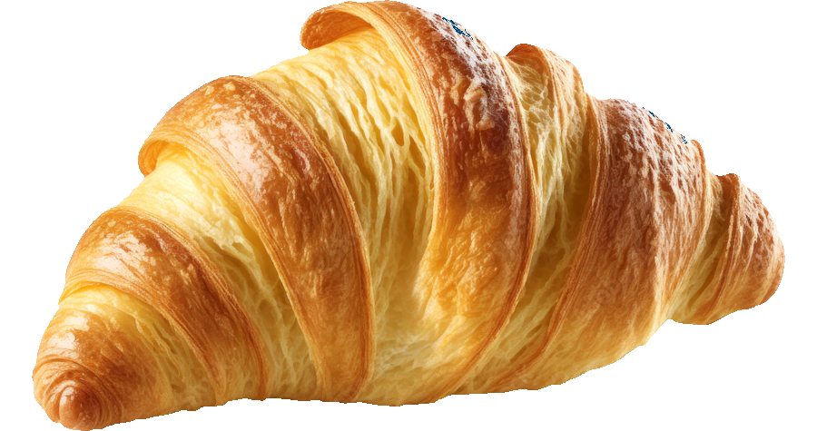
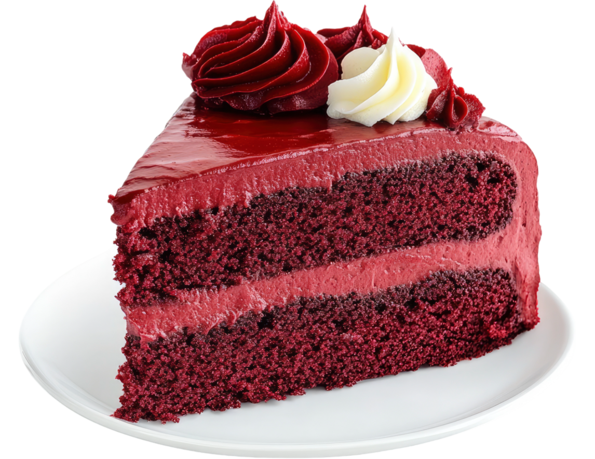

Cappuccino
Rich and creamy cappuccino, topped with velvety milk foam.
- Small (150ml): $2.50
- Medium (250ml): $3.50
- Large (350ml): $4.50
Black Coffee
Traditional black coffee, brewed to perfection using our signature blend of dark roasted beans.
- Small (150ml): $1.50
- Medium (250ml): $2.50
- Large (350ml): $3.50

Croissant
Flaky and buttery croissant, perfect for breakfast or as a snack, either sweet or savory.
- Small (100g): $3.00
- Medium (150g): $5.50
- Large (200g): $7.00

Cake Slice
Available in a variety of flavors, made with high-quality ingredients for a delightful treat.
- Small (200g): $8.00
- Medium (400g): $14.00
- Large (600g): $18.00